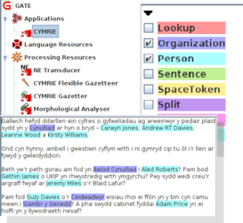

CYMRIE is a named entity recognition pipeline for the Welsh language, that identifies basic entity types, such as Person, Location, Organization, Money amounts, Time and Date expressions.
CYMRIE is a Welsh language version of GATE's prototypical information extraction pipeline, ANNIE. It is part of the Welsh Natural Language Toolkit, a Welsh Government funded project. CYMRIE is distributed with the GATE framework.
| Default annotations | |
| :Person | Standard named entity types |
| :Location | |
| :Organization | |
| :Date | |
| :Address | Includes email and IP addresses as well as street addresses |
| Additional annotations available if selected | |
| :Money | Monetary amounts |
| :Percent | Expressions representing percentages |
| :Token | The individual tokens of the text, with "category" feature for POS |
| :SpaceToken | The spaces between tokens |
| :Sentence | Sentences detected by the sentence splitter |